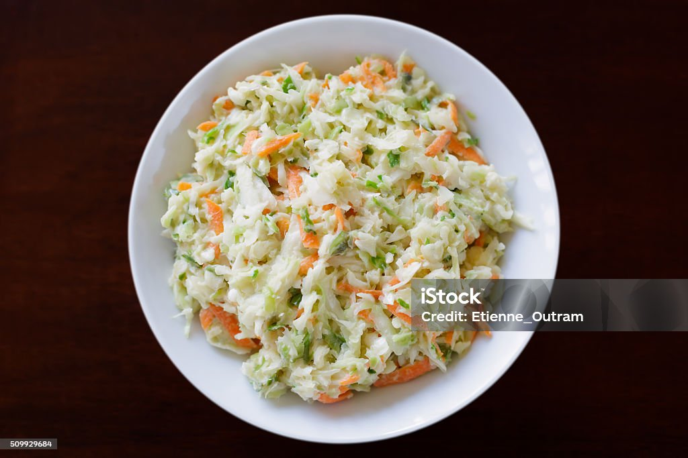

Description
This Southern coleslaw recipe has been passed down the generations and
is great for any occasion. It has the perfect balance of sweet and tangy.
I've even been told it is reminiscent of KFC coleslaw. You be the judge!
This colorful southern coleslaw is sure to brighten up any table.
Ingredients
- 1 head cabbage, finely shredded
- 2 carrots, finely chopped
- 2 tablespoons finely chopped onion
- ½ cup mayonnaise
- ⅓ cup white sugar
- ¼ cup milk
- ¼ cup buttermilk
- 2 tablespoons lemon juice
- 2 tablespoons distilled white vinegar
- ½ teaspoon salt
- ⅛ teaspoon ground black pepper
Directions
-
Mix cabbage, carrots, and onion in a large salad bowl.
Whisk mayonnaise, sugar, milk, buttermilk, lemon juice,
vinegar, salt, and black pepper in a separate bowl
until smooth and sugar has dissolved.
-
Pour dressing over cabbage mixture and mix thoroughly.
Cover bowl and refrigerate slaw at least 2 hours (the
longer the better). Mix again before serving.